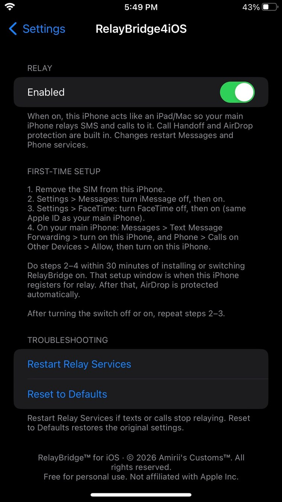
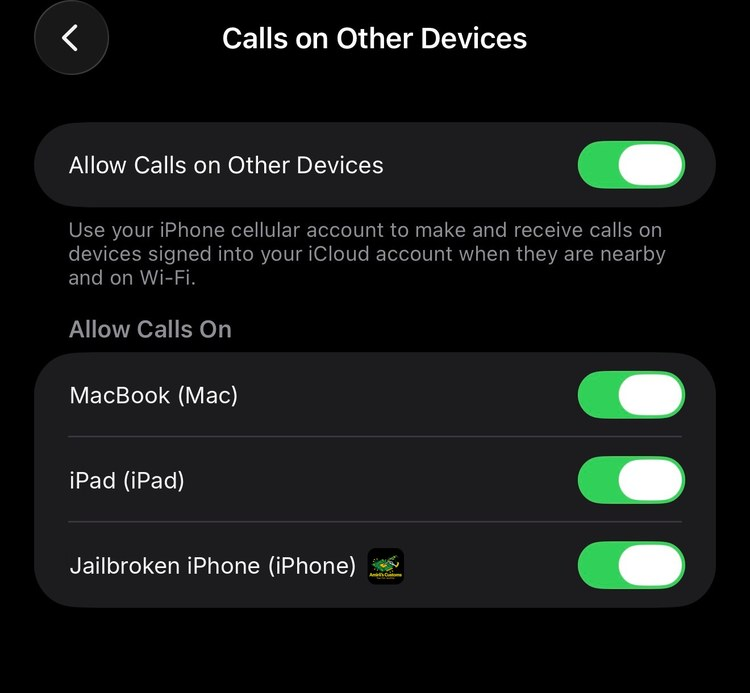
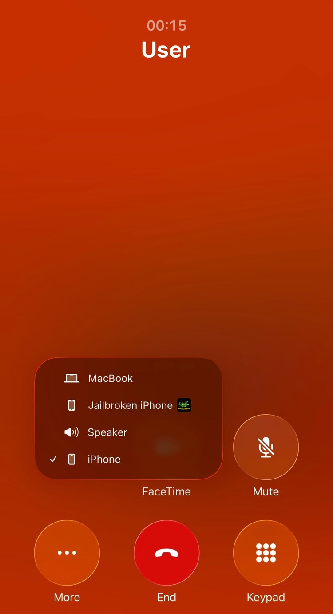

RelayBridge4iOS
by Amirii's Customs™ · version 1.2.6
Turns a spare jailbroken iPhone into a Continuity relay device, like an iPad or Mac. Your main iPhone forwards SMS and phone calls to it, and iMessage keeps working normally.
RelayBridge4iOS is free. Donations are optional and help fund testing on more devices.
Works
- Send and receive SMS (green bubble) through your main iPhone
- Receive MMS picture texts
- Make and receive phone calls through your main iPhone
- iMessage and FaceTime, including photos
- Move a call in progress from your main iPhone to this iPhone (Call Handoff)
- AirDrop keeps working normally
Not supported
- Sending MMS picture texts (send pictures over iMessage instead)
- Call Handoff only lists this iPhone while its screen is awake (incoming calls still ring normally)
- Calls relay only when both phones are on the same Wi-Fi (texts relay anywhere)
Setup
- Remove the SIM from the jailbroken iPhone.
- Install RelayBridge4iOS.
- Settings → Messages: turn iMessage off, then on.
- Settings → FaceTime: turn FaceTime off, then on (same Apple ID as your main iPhone).
- On your main iPhone: Messages → Text Message Forwarding → turn on this iPhone, and Phone → Calls on Other Devices → Allow → turn on this iPhone.
- Do steps 3–5 within 30 minutes of installing. After that, AirDrop protection turns on by itself.



Privacy & security
- No network access. RelayBridge4iOS never connects to the internet, sends data anywhere, or reads your IP address, MAC address or other network info.
- No personal data in the package or source. No names, emails, device identifiers or file paths. Packages are built on GitHub's servers from the public source.
- Apple's encryption is unchanged. It only answers one question differently inside a few Messages and Phone processes: "Does this device have cellular?" It answers "no", like an iPad. SMS and call relay still use Apple's end-to-end encrypted Continuity connection. RelayBridge4iOS never sees message content, call audio or encryption keys.
- No one else gets new information. Apple sees the same kinds of things it sees from any of your devices; nobody else sees anything.
- Debug logs stay on your phone, are off by default, are never uploaded, and show device identifiers as <redacted>.
Keep your jailbroken phone secure: set a passcode, change the default SSH passwords (passwd and passwd mobile as root), and only install tweaks you trust.
Compatibility
- Tested: iPhone 8 Plus, iOS 16.7.15, palera1n (rootless)
- Rootless package, iOS 15 – 26.0.1: palera1n, Dopamine. Untested beyond the iPhone above; please report.
- Rootful package, iOS 8.1 – 14.x: Cydia-era jailbreaks, unc0ver, checkra1n, Taurine, Odyssey, palera1n rootful. Includes 32-bit iPhone 4S/5/5c. Untested; please report.
- Not supported: iOS below 8.1 (no Text Message Forwarding), iPhone XS/XR/11 on iOS 12–13, roothide jailbreaks (for now).
The jailbroken iPhone must have no SIM and use the same Apple ID as your main iPhone.
Changelog
1.2.6 Call Handoff and AirDrop protection are now built in and always on; the beta switches are gone. RelayBridge spoofs the identity service only during a 30-minute setup window after install, so AirDrop keeps working afterwards. New Settings and repo icon. Moved to the shared Amirii's Customs repo.
1.2.5 beta 4 New RelayBridge icon in Settings and on the repo. Moved to the shared Amirii's Customs repo (https://amiriiscustoms.github.io/tweaks/).
1.2.5 beta 3 Now built for iOS 8.1 through 26.0.1: new rootful package for iOS 8.1 – 14 (including 32-bit iPhone 4S/5/5c), rootless package for iOS 15 – 26.0.1. Fixed a likely hooking problem on iPhone XS and newer. Very old jailbreaks without killall get a reboot prompt instead of a failed install. Only iOS 16 has been tested so far; please report other versions.
1.2.5 beta 1 New Beta Options in Settings, both off by default. AirDrop Fix stops RelayBridge from interfering with AirDrop receiving (turn on after this iPhone appears under Text Message Forwarding). Call Handoff (Experimental) lets your main iPhone move a call to this iPhone; moved calls can sound distant on speaker. New terminal commands relaybridge airdropfix on|off and relaybridge handoff on|off.
1.2.4 License and trademark notices in Settings and the package.
1.2.3 Renamed to RelayBridge4iOS.
1.2.2 Rootful (iOS 14) beta build, arm64e support for A12+ devices, repo icons and package page.
1.2.1 Debug logs never record device identifiers and are off by default. Old logs are deleted on install.
1.2.0 Fixed iMessage photos. Fewer changes to how the phone identifies itself.
1.0.0 Settings page, enabled automatically on install, clean uninstall.
GitHub: github.com/AmiriisCustoms/tweaks
RelayBridge™ and Amirii's Customs™ are trademarks of Amirii's Customs. © 2026 Amirii's Customs. All rights reserved. Free for personal use; redistribution or modification is not permitted. Not affiliated with Apple Inc. Apple, iPhone, iMessage, FaceTime and iOS are trademarks of Apple Inc. License